I am currently an associate professor at the School of Electronic Engineering, Xidian University. My research interests include video captioning, visual question answering, object detection, few-shot learning, unsupervised learning, and transfer learning. Our goal is to build an Efficient, Safe, and Stable single/multi-modal perception and understanding system for open scenarios.
I received my Ph.D. degree at Tianjin University, supervised by Prof. Yahong Han. From 2019 to 2020, I was a visiting student at the University of Technology Sydney, supervised by Prof. Yi Yang. Before Ph.D., I have studied Autonomous Driving for more than 3 years.
News
- Feb 2024. One paper was accepted by CVPR 2024.
- Jan 2024. One paper was accepted by ICLR 2024.
- Jan 2024. One paper was accepted by TIP.
- Oct 2023. One paper was accepted by TPAMI.
- Jul 2023. Two papers were accepted by ICCV 2023.
- Feb 2023. One paper was accepted by CVPR 2023.
- Mar 2022. Two papers were accepted by CVPR 2022.
- Nov 2021. CSIG Outstanding Dissertation.
- One paper was accepted by NeurIPS 2021.
- Two papers were accepted by ICCV 2021.
- One paper was accepted by IJCAI 2021.
- Feb 2021. One paper was accepted by TPAMI.
Selected Publications
§: equal contribution to the first author. *: corresponding author.
-
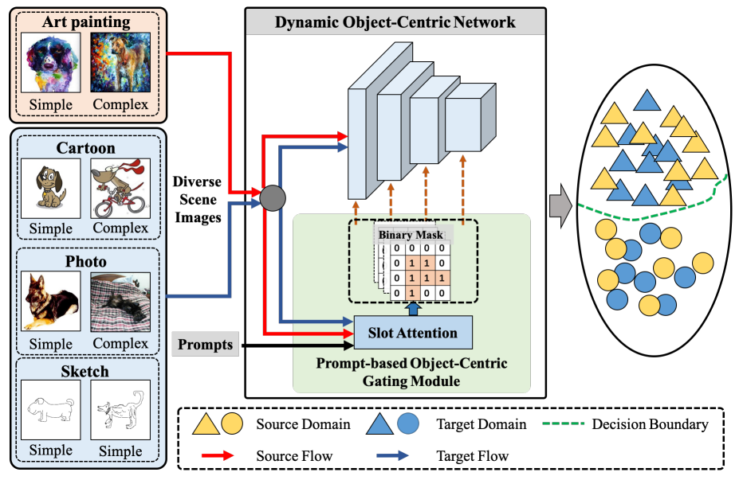 Prompt-Driven Dynamic Object-Centric Learning for Single Domain Generalization
Deng Li, Aming Wu, Yaowei Wang, Yahong Han
CVPR 2024 -
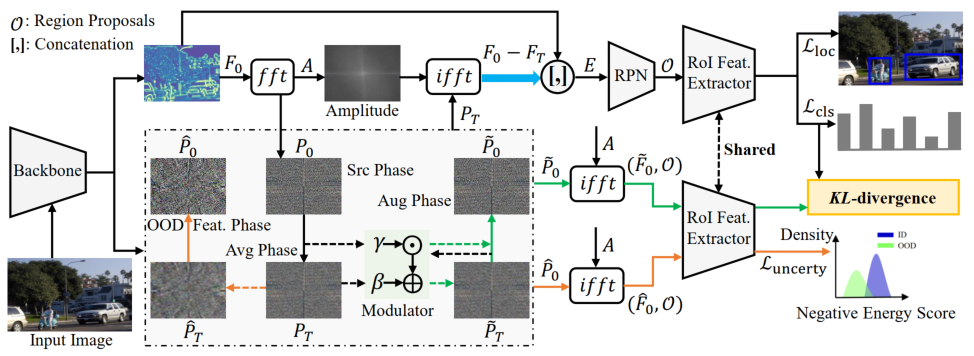 Modulated Phase Diffufor: Concept-Oriented Feature Synthesis for Detecting Unknown Objects
Aming Wu, Cheng Deng
ICLR 2024 -
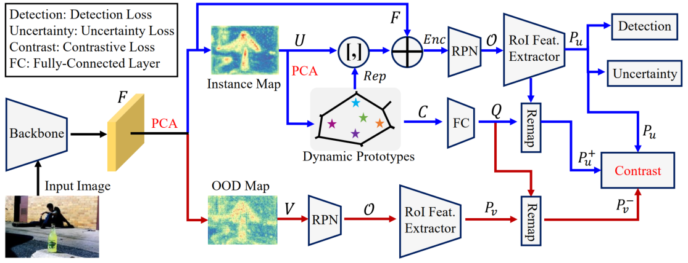 Unsupervised Out-of-Distribution Object Detection via PCA-Driven Dynamic Prototype Enhancement
Aming Wu, Cheng Deng
TIP 2024 -
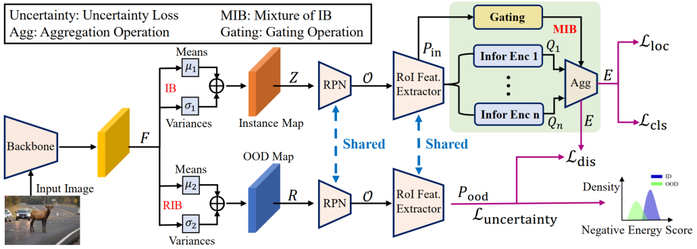 TIB: Detecting Unknown Objects via Two-Stream Information Bottleneck
Aming Wu, Cheng Deng
TPAMI 2023 -
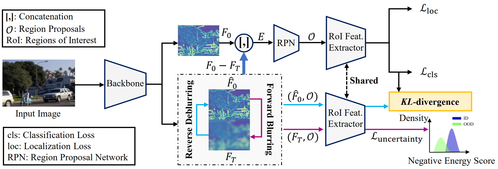 Deep Feature Deblurring Diffusion for Detecting Out-of-Distribution Objects
Aming Wu, Cheng Deng
ICCV 2023 -
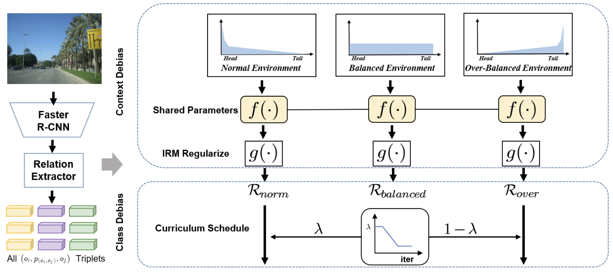 Environment-Invariant Curriculum Relation Learning for Fine-Grained Scene Graph Generation
Yukuan Min, Aming Wu*, Cheng Deng
ICCV 2023 -
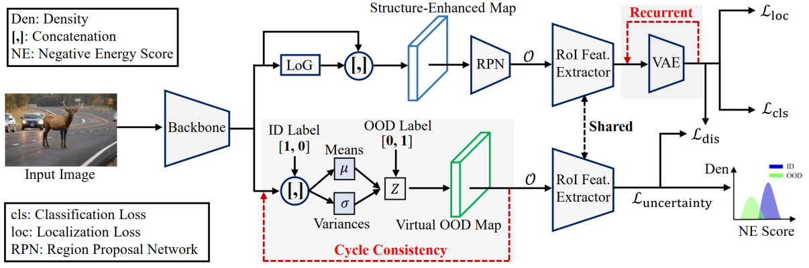 Discriminating Known from Unknown Objects via Structure-Enhanced Recurrent Variational AutoEncoder
Aming Wu, Cheng Deng
CVPR 2023 [CODE] -
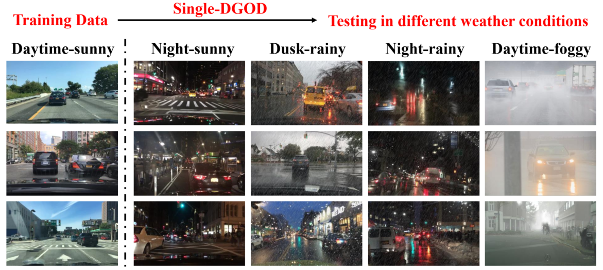 Single-Domain Generalized Object Detection in Urban Scene via Cyclic-Disentangled Self-Distillation
Aming Wu, Cheng Deng
CVPR 2022 [CODE] -
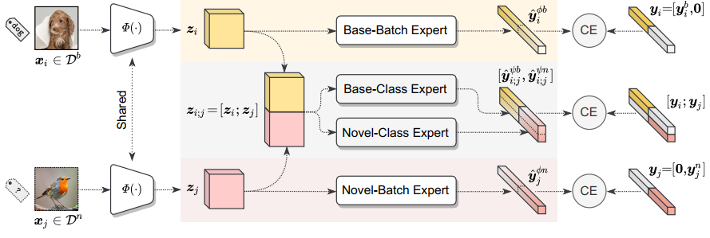 Divide and Conquer: Compositional Experts for Generalized Novel Class Discovery
Muli Yang, Yuehua Zhu, Jiaping Yu, Aming Wu*, Cheng Deng
CVPR 2022 [CODE] -
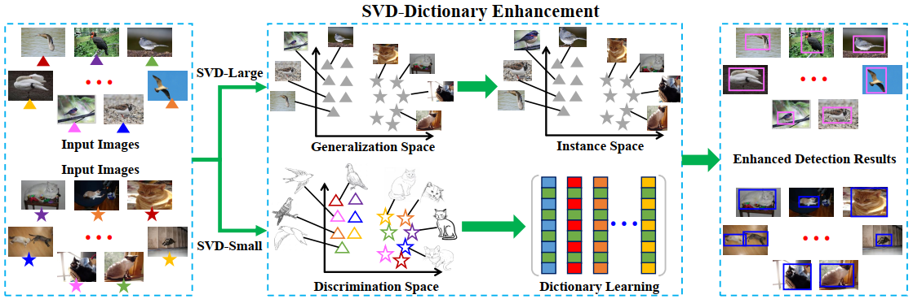 Generalized and Discriminative Few-Shot Object Detection via SVD-Dictionary Enhancement
Aming Wu, Suqi Zhao, Cheng Deng, Wei Liu
NeurIPS 2021 [PDF] -
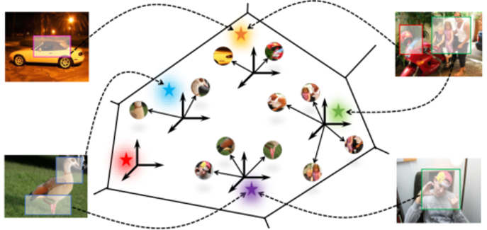 Universal-Prototype Enhancing for Few-Shot Object Detection
Aming Wu, Yahong Han, Linchao Zhu, Yi Yang
ICCV 2021 [PDF] -
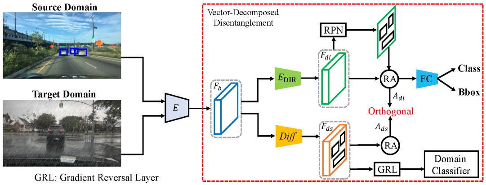 Vector-Decomposed Disentanglement for Domain-Invariant Object Detection
Aming Wu, Rui Liu, Yahong Han, Linchao Zhu, Yi Yang
ICCV 2021 [PDF] -
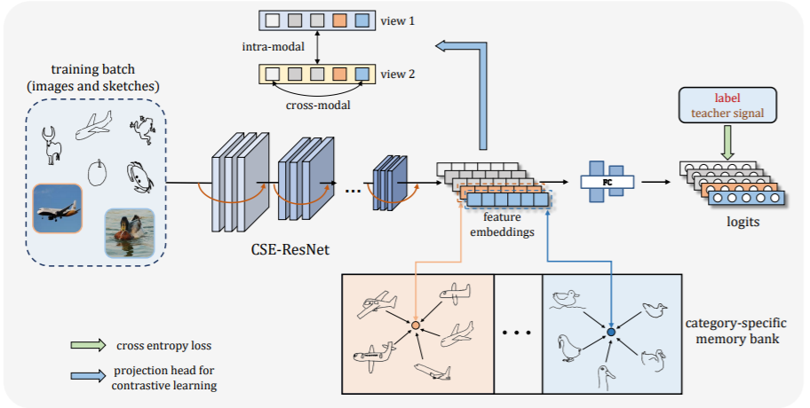 Domain-Smoothing Network for Zero-Shot Sketch-Based Image Retrieval
Zhipeng Wang, Hao Wang, Jiexi Yan, Aming Wu*, Cheng Deng
IJCAI 2021 [PDF] -
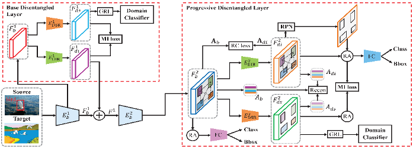 Instance-Invariant Domain Adaptive Object Detection via Progressive Disentanglement
Aming Wu, Yahong Han, Linchao Zhu, Yi Yang
TPAMI, DOI: 10.1109/TPAMI.2021.3060446 [PDF] -
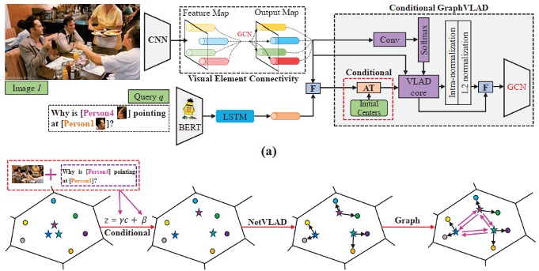 Connective Cognition Network for Directional Visual Commonsense Reasoning
Aming Wu, Linchao Zhu, Yahong Han, Yi Yang
NeurIPS 2019 [PDF] -
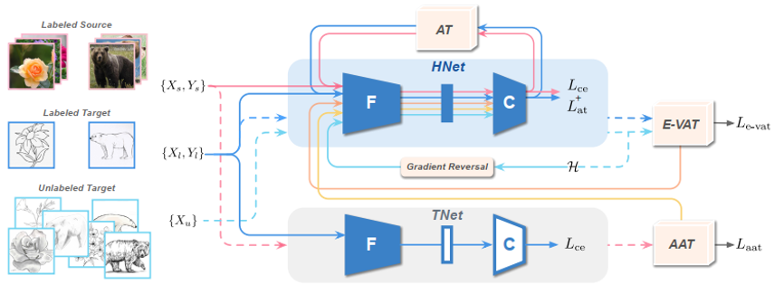 Bidirectional Adversarial Training for Semi-Supervised Domain Adaptation
Pin Jiang, Aming Wu§, Yahong Han, Yunfeng Shao, Meiyu Qi, Bingshuai Li
IJCAI 2020 [PDF] -
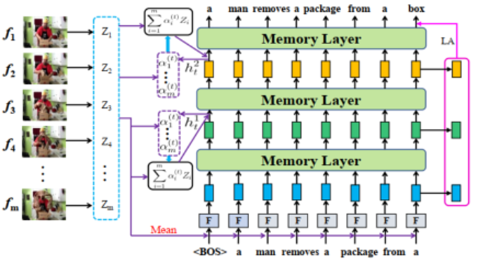 Hierarchical Memory Decoder for Visual Narrating
Aming Wu, Yahong Han, Zhou Zhao, Yi Yang
TCSVT, DOI: 10.1109/TCSVT.2020.3020877 [PDF] -
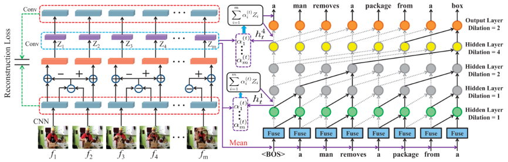 Convolutional Reconstruction-to-Sequence for Video Captioning
Aming Wu, Yahong Han, Yi Yang, Qinghua Hu, Fei Wu
TCSVT, DOI: 10.1109/TCSVT.2019.2956593 [PDF] -
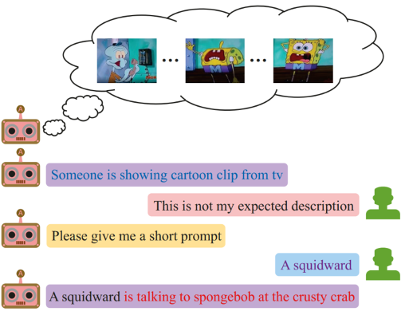 Video Interactive Captioning with Human Prompts
Aming Wu, Yahong Han, Yi Yang
IJCAI 2019 [PDF] -
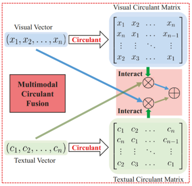 Multi-modal Circulant Fusion for Video-to-Language and Backward
Aming Wu, Yahong Han
IJCAI 2018 [PDF]